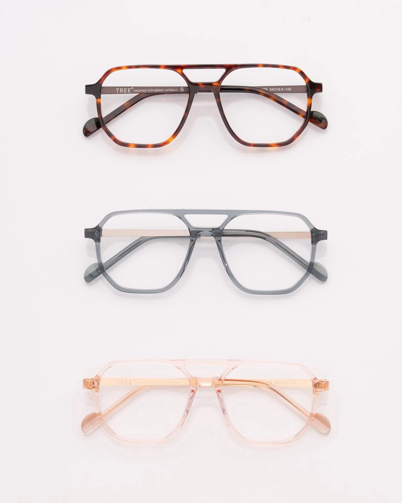
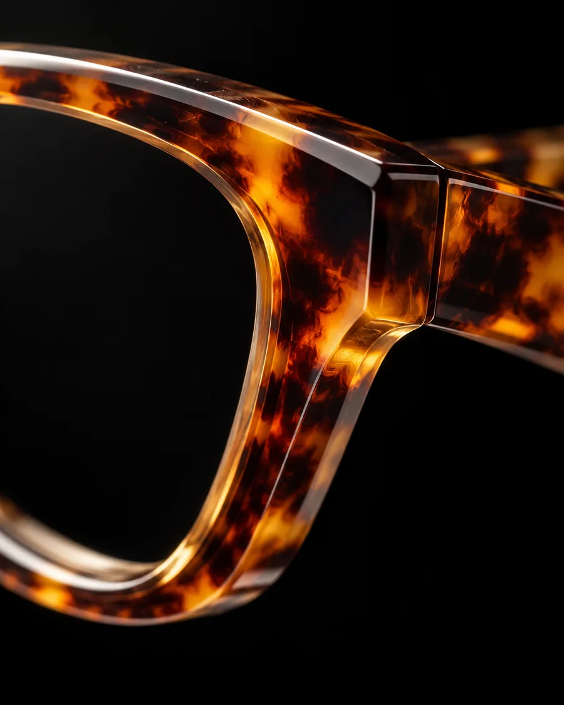
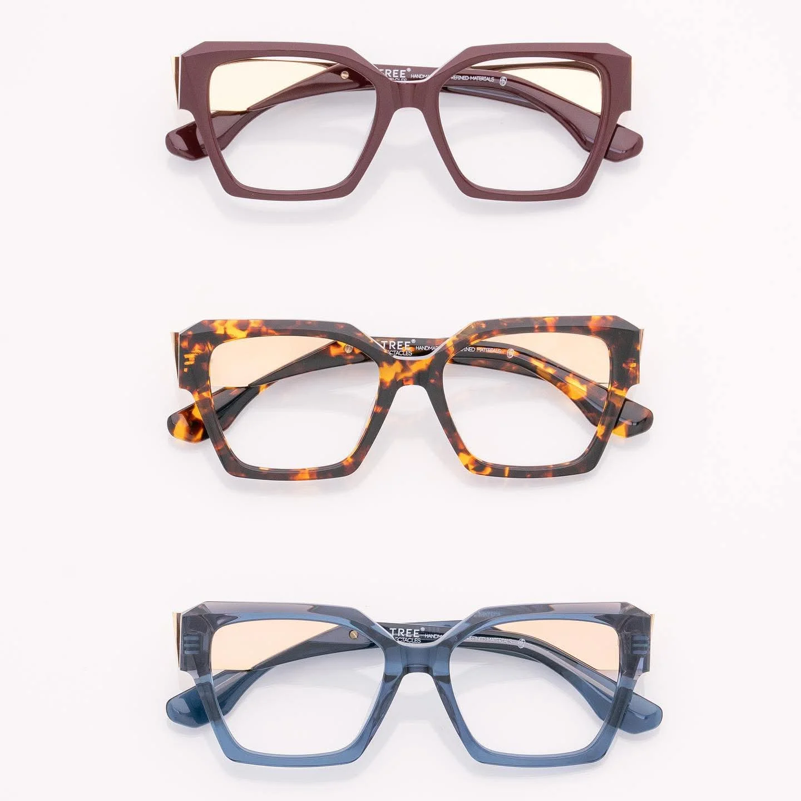

TREE Spectacles
Włoska forma, japońska precyzja. Oprawy z japońskiego tytanu i biooctanu, bez zbędnych ozdób. Przymierzysz je u nas, przy Piotrkowskiej 172/180.
- Założona
- 2011, Marco Barp
- Region
- Belluno, Włochy
- Materiały
- japoński tytan, biooctan

zdjęcie z biblioteki salonu, prawa do potwierdzeniaDetale, które widać z bliska

Fazowany front
Krawędzie są ścięte pod kątem, więc oprawa inaczej łapie światło z każdej strony.

Grawer na zauszniku
„Handmade with refined materials”: ręczna robota i dobrane materiały.

Metal przy zawiasie
Złota wstawka zestawiona z acetatem w kolorze havana.
Zdjęcia poglądowe, wygenerowane. Docelowo zbliżenia oprawy TREE z salonu.

zdjęcie z biblioteki salonu, prawa do potwierdzeniaJeden model, trzy charaktery
Ten sam kształt w bordo, havanie i niebieskim krysztale. Kolor oprawy zmienia twarz bardziej niż kształt, dlatego przy przymierzaniu zaczynamy od kolorów.
TREE Spectacles założył w 2011 roku Marco Barp, w regionie Belluno na północy Włoch, który od pokoleń kojarzy się z produkcją okularów. Japoński tytan daje lekkość i trwałość, biooctan pochodzenia naturalnego nadaje kolor i ciepło.
Jak czytać rozmiar oprawy
Na wewnętrznej stronie zausznika każdej oprawy są trzy liczby. Na pilotkach TREE ze zdjęcia wyżej to 54□16.5-145. O wygodzie i tak decyduje przymiarka: jak oprawa leży na nosie, gdzie wypadają źrenice, czy zausznik nie uciska.
- 54 mm
- szerokość jednego szkła
- 16,5 mm
- szerokość mostka nad nosem
- 145 mm
- długość zausznika
Przymierz TREE w salonie
Kolekcja zmienia się z sezonem. Zadzwoń przed wizytą: sprawdzimy, które modele i kolory są na miejscu, i odłożymy je dla Ciebie.
Telefon
Mówisz, co Ci się podoba, sprawdzamy dostępność.
Przymiarka
Kolory, rozmiar, jak oprawa leży na nosie.
Szkła
Dobieramy je do recepty, a jeśli jej nie masz, najpierw badamy wzrok.